ELK+filebeat+kafka日志分析系统
一、架构¶
filebeat=>kafka=>logstash=>elasticsearch=>kibana
二、测试环境介绍¶
| 操作系统 | java环境 | 角色 | 对应服务版本 | |
|---|---|---|---|---|
| 192.168.1.1 | centos 6.7 | java version "1.8.0_191" | Elasticsearch-master | elasticsearch-6.5.1+elasticsearch-head插件 |
| 192.168.1.2 | centos 6.7 | java version "1.8.0_191" | Elasticsearch-datanode | elasticsearch-6.5.1 |
| 192.168.1.3 | centos 6.7 | java version "1.8.0_191" | Elasticsearch-datanode | elasticsearch-6.5.1 |
| 192.168.1.4 | centos 6.7 | java version "1.8.0_191" | Logstash | logstash-6.5.1 |
| 192.168.1.5 | centos 6.7 | 无 | kibana | kibana-6.5.1 |
| 192.168.1.6 | centos 6.7 | 无 | filebeat | filebeat-6.5.1 |
| 192.168.1.7 | centos 6.7 | java version "1.8.0_191" | Kafka+Zookeeper | kafka_2.11-0.11.0.2+kafka自带zookeeper |
| 192.168.1.8 | centos 6.7 | java version "1.8.0_191" | Kafka+Zookeeper | kafka_2.11-0.11.0.2+kafka自带zookeeper |
| 192.168.1.9 | centos 6.7 | java version "1.8.0_191" | Kafka+Zookeeper | kafka_2.11-0.11.0.2+kafka自带zookeeper |
三、部署java环境¶
除filebea和kibana以外的角色服务器上都要进行
3.1、检查java环境¶
1 2 | java -version echo $JAVA_HOME |
Elasticsearch requires at least Java 8.Before you install Elasticsearch, please check your Java version first by running (and then install/upgrade accordingly if needed):
3.2、安装JDK¶
1 2 3 | cd /usr/local/src/ wget --no-check-certificate --no-cookies --header "Cookie: oraclelicense=accept-securebackup-cookie" https://download.oracle.com/otn-pub/java/jdk/8u191-b12/2787e4a523244c269598db4e85c51e0c/jdk-8u191-linux-x64.rpm rpm -ivh jdk-8u191-linux-x64.rpm |
四、部署elasticsearch¶
在
192.168.1.1、192.168.1.2和192.168.1.3上面都要进行
4.1、创建elasticsearch用户¶
1 2 | groupadd elasticsearch useradd elasticsearch -g elasticsearch |
由于ElasticSearch可以接收用户输入的脚本并且执行，为了系统安全考虑， 建议创建一个单独的用户用来运行ElasticSearch。以root身份启动elasticsearch的时候，会遇到以下报错：
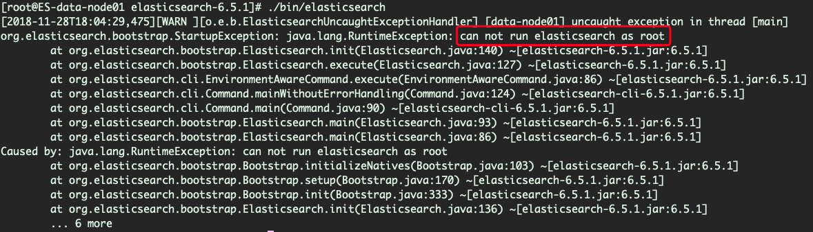
4.2、调整系统参数¶
4.2.1、修改最大进程数限制¶
修改/etc/security/limits.d/90-nproc.conf中的*用户对应的最大进程为4096
1 2 3 4 5 6 | # Default limit for number of user's processes to prevent # accidental fork bombs. # See rhbz #432903 for reasoning. * soft nproc 4096 root soft nproc unlimited |
1 | [1]: max number of threads [1024] for user [elasticsearch] is too low, increase to at least [4096] |
4.2.2、调整vm.max_map_count的值¶
1 2 3 | sed -i '/vm.max_map_count/d' /etc/sysctl.conf echo "vm.max_map_count=262144" >> /etc/sysctl.conf sysctl -w vm.max_map_count=262144 |
否则会遇到以下报错
1 | [2]: max virtual memory areas vm.max_map_count [65530] is too low, increase to at least [262144] |
4.3、安装elasticsearch¶
1 2 3 4 5 | cd /usr/local
wget https://artifacts.elastic.co/downloads/elasticsearch/elasticsearch-6.5.1.tar.gz
tar -zxf elasticsearch-6.5.1.tar.gz
chown -R elasticsearch:elasticsearch elasticsearch-6.5.1
ln -s elasticsearch-6.5.1 elasticsearch
|
4.4、修改配置文件¶
4.4.1、master上的配置¶
编辑config/elasticsearch.yml,在文件末尾添加如下配置：
1 2 3 4 5 6 7 8 9 | http.cors.enabled: true http.cors.allow-origin: "*" #这两个选项是为了能够使用head插件，根据需要进行配置 cluster.name: wqytest node.name: master node.master: true node.data: false network.host: 192.168.1.1 |
4.4.2、datanode上的配置¶
编辑config/elasticsearch.yml,在文件末尾添加如下配置：
1 2 3 4 5 6 7 | cluster.name: wqytest node.name: data-node01 #192.168.1.3上面此处name换为data-node02 node.master: false node.data: true network.host: 192.168.1.2 #192.168.1.3上面此处ip换为192.168.1.3 discovery.zen.ping.unicast.hosts: ["192.168.1.1"] |
4.5、启动elasticsearch¶
1 2 | su elasticsearch /usr/local/elasticsearch/bin/elasticsearch -d |
4.6、确认启动状态¶
执行curl http://yourhostip:9200看到以下输出，即表明启动正常：
1 2 3 4 5 6 7 8 9 10 11 12 13 14 15 16 17 | { "name" : "data-node01", "cluster_name" : "wqytest", "cluster_uuid" : "0-jj-5-dTW-O7lFaYWQuzw", "version" : { "number" : "6.5.1", "build_flavor" : "default", "build_type" : "tar", "build_hash" : "8c58350", "build_date" : "2018-11-16T02:22:42.182257Z", "build_snapshot" : false, "lucene_version" : "7.5.0", "minimum_wire_compatibility_version" : "5.6.0", "minimum_index_compatibility_version" : "5.0.0" }, "tagline" : "You Know, for Search" } |
4.7、使用elasticsearch-head插件¶
4.7.1、部署node环境¶
(1)、下载node包
可以前往
https://nodejs.org/en/download/查找适合自己node包
1 2 3 4 | cd /usr/local/
wget https://nodejs.org/dist/v10.13.0/node-v10.13.0-linux-x64.tar.xz
tar -Jxf node-v10.13.0-linux-x64.tar.xz
ln -s node-v10.13.0-linux-x64 node
|
(2)、设置node环境变量
编辑/etc/profile在文件末尾添加以下配置：
1 2 3 4 | NODE_HOME=/usr/local/node PATH=$PATH:$NODE_HOME/bin NODE_PATH=$NODE_HOME/lib/node_modules export NODE_HOME PATH NODE_PATH |
4.7.2、下载elasticsearch-head¶
1 2 3 | cd /usr/local/ wget https://github.com/mobz/elasticsearch-head/archive/master.zip unzip master.zip |
4.7.3、安装依赖¶
1 2 | cd /usr/local/elasticsearch-head-master
npm install
|
4.7.4、修改Gruntfile.js配置¶
编辑Gruntfile.js文件，搜索关键词connect,增加hostname设置，如下：
1 2 3 4 5 6 7 8 9 10 | connect: {
server: {
options: {
hostname: '0.0.0.0',
port: 9100,
base: '.',
keepalive: true
}
}
}
|
4.7.5、启动elasticsearch-head¶
1 2 | cd /usr/local/elasticsearch-head-master nohup npm run start & |
head插件的页面操作此处不做展开说明
五、部署kafka¶
在
192.168.1.7、192.168.1.8和192.168.1.9上面都要进行,在实际部署时，kafka节点要保证最少三台，因为filebeat在连接kafka时就要求最少要有三个kafka节点（重要！！！）
5.1、安装kafka¶
1 2 3 4 | cd /usr/local/
wget https://archive.apache.org/dist/kafka/0.11.0.2/kafka_2.11-0.11.0.2.tgz
tar -zxf kafka_2.11-0.11.0.2.tgz
ln -s kafka_2.11-0.11.0.2 kafka
|
5.2、配置kafka¶
5.2.1、192.168.1.7的zookeeper配置¶
备份config/zookeeper.properties然后清空该文件并添加如下配置内容：
1 2 3 4 5 6 7 8 9 | tickTime=2000 initLimit=10 syncLimit=5 dataDir=/tmp/zookeeper clientPort=2181 clientPortAddress=192.168.1.7 server.1=192.168.1.7:2888:3888 server.2=192.168.1.8:2888:3888 server.3=192.168.1.9:2888:3888 |
2181端口是zookeeper对外的服务端口，zookeeper集群中的每个节点上都有2181端口；2888端口是zookeeper中的leader节点用来与follower节点通信的服务端口，只有在leader节点上才能看到2888端口；3888端口是在选举leader时投票的通信端口，zookeeper集群中的每个节点上都有3888端口。
5.2.2、192.168.1.8的zookeeper配置¶
备份config/zookeeper.properties然后清空该文件并添加如下配置内容：
1 2 3 4 5 6 7 8 9 | tickTime=2000 initLimit=10 syncLimit=5 dataDir=/tmp/zookeeper clientPort=2181 clientPortAddress=192.168.1.8 server.1=192.168.1.7:2888:3888 server.2=192.168.1.8:2888:3888 server.3=192.168.1.9:2888:3888 |
5.2.3、192.168.1.9的zookeeper配置¶
备份config/zookeeper.properties然后清空该文件并添加如下配置内容：
1 2 3 4 5 6 7 8 9 | tickTime=2000 initLimit=10 syncLimit=5 dataDir=/tmp/zookeeper clientPort=2181 clientPortAddress=192.168.1.9 server.1=192.168.1.7:2888:3888 server.2=192.168.1.8:2888:3888 server.3=192.168.1.9:2888:3888 |
5.2.4、192.168.1.7的kafka配置¶
备份config/server.properties然后清空该文件并添加如下配置内容：
1 2 3 4 5 6 7 8 9 10 11 12 13 14 15 16 17 18 19 20 21 22 23 | broker.id=1 #kafka集群中的每个broker需要拥有一个唯一的id delete.topic.enable=true listeners=PLAINTEXT://192.168.1.7:9092 port=9092 host.name=192.168.1.7 num.network.threads=12 num.io.threads=12 num.replica.fetchers=8 socket.send.buffer.bytes=102400 socket.receive.buffer.bytes=102400 socket.request.max.bytes=104857600 log.dirs=/tmp/kafka-logs num.partitions=1 default.replication.factor=3 num.recovery.threads.per.data.dir=4 auto.create.topics.enable=false offsets.retention.minutes=43200 log.retention.hours=4380 log.segment.bytes=1073741824 log.retention.check.interval.ms=300000 log.cleaner.enable=true zookeeper.connect=192.168.1.7:2181,192.168.1.8:2181,192.168.1.9:2181/kafka zookeeper.connection.timeout.ms=6000 |
5.2.5、192.168.1.8的kafka配置¶
备份config/server.properties然后清空该文件并添加如下配置内容：
1 2 3 4 5 6 7 8 9 10 11 12 13 14 15 16 17 18 19 20 21 22 23 | broker.id=2 delete.topic.enable=true listeners=PLAINTEXT://192.168.1.8:9092 port=9092 host.name=192.168.1.8 num.network.threads=12 num.io.threads=12 num.replica.fetchers=8 socket.send.buffer.bytes=102400 socket.receive.buffer.bytes=102400 socket.request.max.bytes=104857600 log.dirs=/tmp/kafka-logs num.partitions=1 default.replication.factor=3 num.recovery.threads.per.data.dir=4 auto.create.topics.enable=false offsets.retention.minutes=43200 log.retention.hours=4380 log.segment.bytes=1073741824 log.retention.check.interval.ms=300000 log.cleaner.enable=true zookeeper.connect=192.168.1.7:2181,192.168.1.8:2181,192.168.1.9:2181/kafka zookeeper.connection.timeout.ms=6000 |
5.2.6、192.168.1.9的kafka配置¶
备份config/server.properties然后清空该文件并添加如下配置内容：
1 2 3 4 5 6 7 8 9 10 11 12 13 14 15 16 17 18 19 20 21 22 23 | broker.id=3 delete.topic.enable=true listeners=PLAINTEXT://192.168.1.9:9092 port=9092 host.name=192.168.1.9 num.network.threads=12 num.io.threads=12 num.replica.fetchers=8 socket.send.buffer.bytes=102400 socket.receive.buffer.bytes=102400 socket.request.max.bytes=104857600 log.dirs=/tmp/kafka-logs num.partitions=1 default.replication.factor=3 num.recovery.threads.per.data.dir=4 auto.create.topics.enable=false offsets.retention.minutes=43200 log.retention.hours=4380 log.segment.bytes=1073741824 log.retention.check.interval.ms=300000 log.cleaner.enable=true zookeeper.connect=192.168.1.7:2181,192.168.1.8:2181,192.168.1.9:2181/kafka zookeeper.connection.timeout.ms=6000 |
5.3、启动zookeeper¶
需要在192.168.1.7、192.168.1.8和192.168.1.9上分别执行
1 2 | cd /usr/local/kafka nohup bin/zookeeper-server-start.sh config/zookeeper.properties & |
5.4、启动kafka¶
需要在192.168.1.7、192.168.1.8和192.168.1.9上分别执行
1 2 | cd /usr/local/kafka nohup bin/kafka-server-start.sh config/server.properties & |
5.5、查看启动情况¶
1 2 3 4 5 6 | # netstat -nlpt|grep java tcp6 0 0 :::44556 :::* LISTEN 17908/java tcp6 0 0 192.168.1.8:3888 :::* LISTEN 17908/java tcp6 0 0 :::42993 :::* LISTEN 18748/java tcp6 0 0 192.168.1.8:9092 :::* LISTEN 18748/java tcp6 0 0 192.168.1.8:2181 :::* LISTEN 17908/java |
六、部署kibana¶
6.1、下载安装kibana¶
1 2 3 4 | cd /usr/local/
wget https://artifacts.elastic.co/downloads/kibana/kibana-6.5.1-linux-x86_64.tar.gz
tar -zxf kibana-6.5.1-linux-x86_64.tar.gz
ln -s kibana-6.5.1-linux-x86_64 kibana
|
6.2、修改kibana配置¶
1 2 3 4 5 | #vim config/kibana.yml server.port: 5601 # 配置kibana的端口 server.host: 192.168.1.5 # 配置监听ip elasticsearch.url: "http://192.168.1.1:9200" logging.dest: /var/log/kibana.log #默认是记录到messages里面 |
6.3、启动kibana¶
1 | ./bin/kibana |
By default, Kibana runs in the foreground, prints its logs to the standard output (
stdout), and can be stopped by pressing Ctrl-C.
6.4、查看启动情况¶
1 2 3 4 | #netstat -nlpt|grep node tcp 0 0 192.168.1.5:5601 0.0.0.0:* LISTEN 6580/./bin/../node/ #ps aux|grep node root 6580 8.7 0.2 1443252 300312 pts/0 Sl+ 19:30 0:14 ./bin/../node/bin/node --no-warnings ./bin/../src/cli |
由于kibana是使用node.js开发的，所以进程名称为node
6.5、浏览器访问¶
通过浏览器访问http://192.168.1.5:5601，可以看到类似如下的界面：
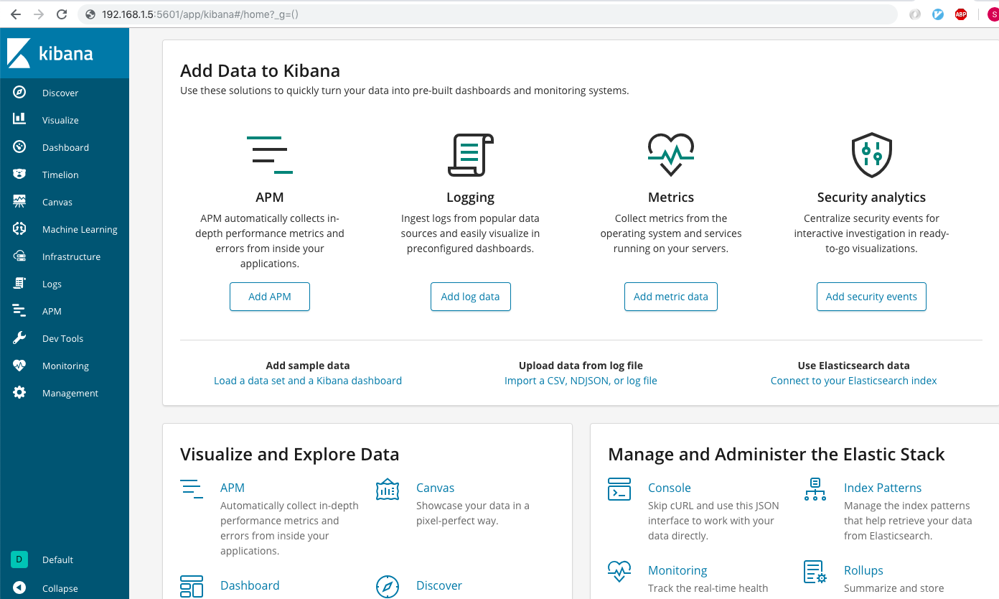
七、安装filebeat¶
1 2 3 4 | cd /usr/local/
wget https://artifacts.elastic.co/downloads/beats/filebeat/filebeat-6.5.1-linux-x86_64.tar.gz
tar -zxf filebeat-6.5.1-linux-x86_64.tar.gz
ln -s filebeat-6.5.1 filebeat
|
八、安装logstash¶
1 2 3 4 | cd /usr/local
wget https://artifacts.elastic.co/downloads/logstash/logstash-6.5.1.tar.gz
tar -zxf logstash-6.5.1.tar.gz
ln -s logstash-6.5.1 logstash
|
九、测试过程¶
9.1、配置nginx¶
9.1.1、log_format¶
1 | log_format test '$remote_addr\t$msec\t$request_method\t$scheme://$host$request_uri\t$bytes_sent\t$request_time'; |
9.1.2、http_server¶
1 2 3 4 5 6 | server { access_log /usr/local/nginx/logs/test.access.log test; server_name www.test.com; listen 80; return 404; } |
9.1.3、日志输出示例¶
1 | 192.168.10.2 1543314863.426 GET http://www.test.com/video/666.m3u8?start=8702242 336 0.000 |
9.2、配置filebeat¶
9.2.1、filebeat.yml¶
1 2 3 4 5 6 7 8 9 10 11 12 13 14 15 16 17 18 19 20 | #vim filebeat.yml name: 61.160.243.126 filebeat.inputs: - type: log paths: - /usr/local/nginx/logs/test.access.log fields: logtype: nginxaccesslog output.kafka: codec.json: pretty: true escape_html: false hosts: ["192.168.1.7:9092","192.168.1.8:9092","192.168.1.9:9092"] topic: test partition.round_robin: reachable_only: false required_acks: 1 compression: gzip max_message_bytes: 1000000 |
有关filebeat的log input的配置介绍见官网文档
https://www.elastic.co/guide/en/beats/filebeat/current/filebeat-input-log.html有关filebeat output到kafka的配置介绍见官方文档
https://www.elastic.co/guide/en/beats/filebeat/current/kafka-output.html
9.2.2、启动filebeat¶
1 | ./filebeat -e -c filebeat.yml |
9.2.3、filebeat输出内容格式：¶
为了看到filebeat的输入内容，可以设置output到console，启动filebeat后可以直接在终端中看输出的内容
1 2 3 4 5 6 7 8 9 | #vim filebeat-ouput-stdout.yml filebeat.inputs: - type: log paths: - /usr/local/nginx/logs/test.access.log fields: logtype: nginxaccesslog output.console: pretty: true |
内容格式如下：
1 2 3 4 5 6 7 8 9 10 11 12 13 14 15 16 17 18 19 20 21 22 23 24 25 26 27 28 29 30 31 32 33 34 35 | { "@timestamp": "2018-12-10T08:41:22.427Z", "@metadata": { "beat": "filebeat", "type": "doc", "version": "6.5.1" }, "host": { "name": "192.168.1.6", "architecture": "x86_64", "os": { "platform": "centos", "version": "6.7 ()", "family": "redhat" }, "containerized": true }, "source": "/usr/local/nginx/logs/test.access.log", "offset": 9330, "message": "61.135.155.34\t1544431279.302\tGET\thttp://www.test.com/etc.tar.gz\t82183\t0.074", "fields": { "logtype": "nginxaccesslog" }, "prospector": { "type": "log" }, "input": { "type": "log" }, "beat": { "name": "61.160.243.126", "hostname": "DEVSTOR-JSCZ-goofys-243-126", "version": "6.5.1" } } |
9.3、kafka中创建topic¶
1 | /usr/local/kafka/bin/kafka-topics.sh --create --zookeeper 192.168.1.7:2181/kafka --replication-factor 1 --partitions 1 --topic test |
通过查看topic列表验证topic是否创建成功：
1 2 3 | # /usr/local/kafka/bin/kafka-topics.sh --list --zookeeper 192.168.1.7:2181/kafka __consumer_offsets test |
9.4、配置logstash¶
9.4.1、logstash.conf¶
1 2 3 4 5 6 7 8 9 10 11 12 13 14 15 16 17 18 19 20 21 22 23 24 25 26 27 28 29 30 31 32 33 34 35 36 37 38 39 40 41 42 43 | input {
kafka {
bootstrap_servers => ["192.168.1.7:9092"]
topics => ["test"]
group_id => "test"
codec => "json"
consumer_threads => 1
decorate_events => true
}
}
filter {
if [fields][logtype] == "nginxaccesslog" {
grok {
match => { "message" => "%{IPV4:client}\t%{NUMBER:msec}\t%{WORD:method}\t%{URI:url}\t%{NUMBER:bytes}\t%{NUMBER:duration}" }
remove_field => "message"
}
}
mutate {
remove_field => "offset"
remove_field => "prospector"
remove_field => "input"
remove_field => "host"
remove_field => "@version"
}
}
output {
if "_grokparsefailure" not in [tags] {
if [fields][logtype] == "nginxaccesslog" {
elasticsearch {
hosts => ["192.168.1.1:9200"]
index => "nginx-access-%{+YYYY.MM}"
}
}
elseif [fields][logtype] == "system-syslog" {
elasticsearch {
hosts => ["192.168.1.1:9200"]
index => "system-syslog-%{+YYYY.MM}"
}
}
}
}
|
有关logstash中kafka-input的配置介绍见官方文档：
https://www.elastic.co/guide/en/logstash/current/plugins-inputs-kafka.html有关logstash中grok-filter的配置介绍见官方文档：
https://www.elastic.co/guide/en/logstash/current/plugins-filters-grok.html有关logstash中output-elasticsearch的配置介绍见官方文档：
https://www.elastic.co/guide/en/logstash/current/plugins-outputs-elasticsearch.html
9.4.2、启动logstash¶
1 | #./bin/logstash --path.settings config -f config/logstash.conf
|
9.4.3、logstash输出格式¶
logstash中最为关键的地方在于filter,为了调试filter的配置，可以配置logstash输出内容到终端上面
1 2 3 4 5 6 7 8 9 10 11 12 13 14 15 16 17 18 19 20 21 22 23 24 25 26 | input {
kafka {
bootstrap_servers => ["192.168.1.7:9092"]
topics => ["test"]
group_id => "test"
codec => "json"
consumer_threads => 1
decorate_events => true
}
}
filter {
if [fields][logtype] == "nginxaccesslog" {
grok {
match => { "message" => "%{IPV4:client}\t%{NUMBER:msec}\t%{WORD:method}\t%{URI:url}\t%{NUMBER:bytes}\t%{NUMBER:duration}" }
remove_field => "message"
}
}
mutate {
remove_field => "offset"
remove_field => "prospector"
remove_field => "input"
remove_field => "host"
remove_field => "@version"
}
}
output {stdout{}}
|
输入内容格式如下：
1 2 3 4 5 6 7 8 9 10 11 12 13 14 15 16 17 18 | {
"fields" => {
"logtype" => "nginxaccesslog"
},
"bytes" => "82183",
"@timestamp" => 2018-12-10T08:38:53.284Z,
"beat" => {
"hostname" => "DEVSTOR-JSCZ-goofys-243-126",
"version" => "6.5.1",
"name" => "192.168.1.6"
},
"source" => "/usr/local/nginx/logs/test.access.log",
"client" => "122.11.50.246",
"url" => "http://www.test.com/etc.tar.gz",
"msec" => "1544112583.706",
"method" => "GET",
"duration" => "81920"
}
|
9.5、查看ES中的内容¶
通过elasticsearch-head插件查看ES中是否收到了由logstash发送过来的日志：
在浏览器中打开http://192.168.1.1:9100
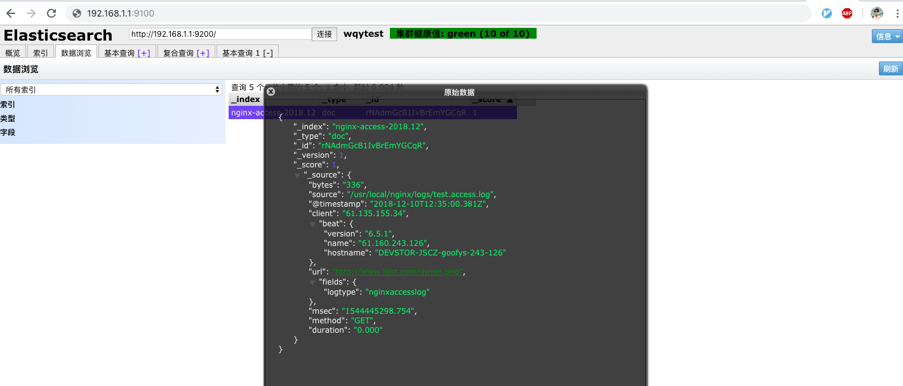
9.6、kibana连接ES¶
9.6.1、创建index-pattern¶
(1)、打开http://192.168.1.5:5601进入首页后，点击“connect to your Elasticsearch index”
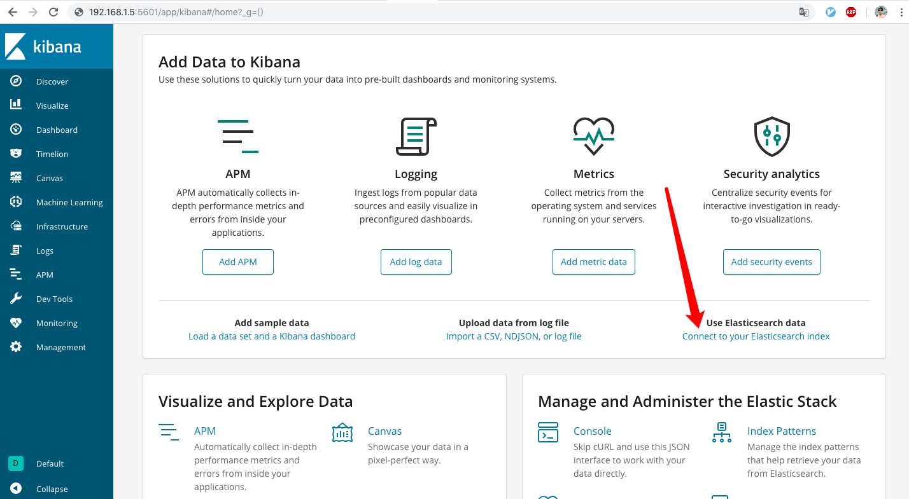
(2)、点击“Create index pattern”
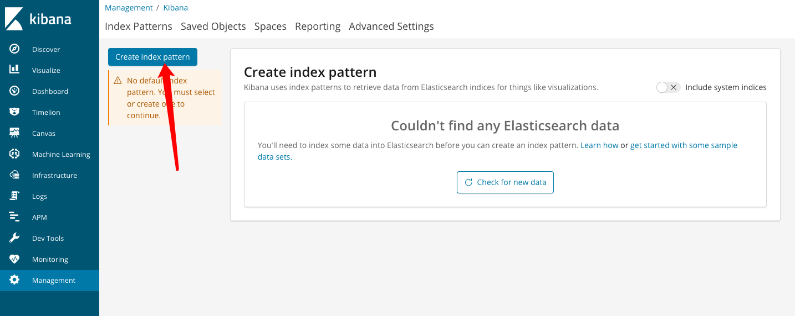
(3)、填入elasticsearch中的索引名，支持正则匹配：
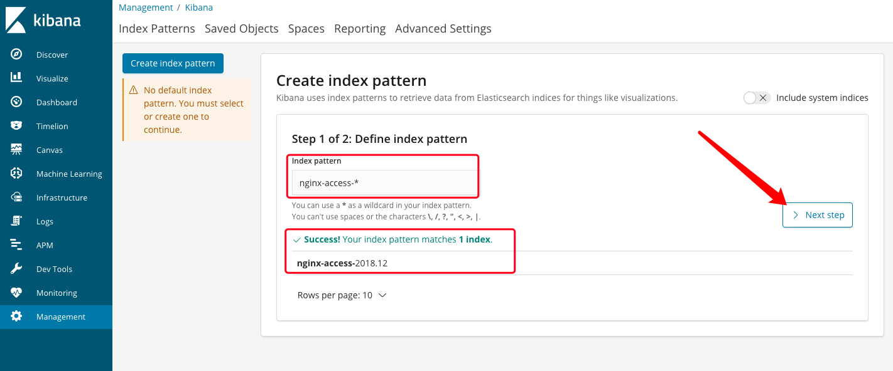
(4)、这一步要选择用来作时间过滤的字段
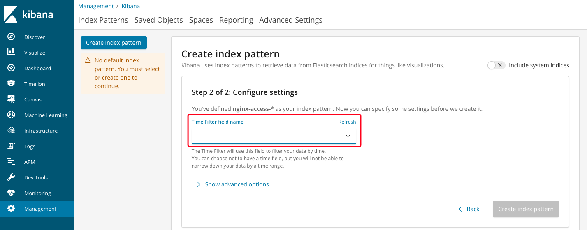
(5)、选择“@timestamp”作为时间过滤字段，然后点击“create index pattern”：
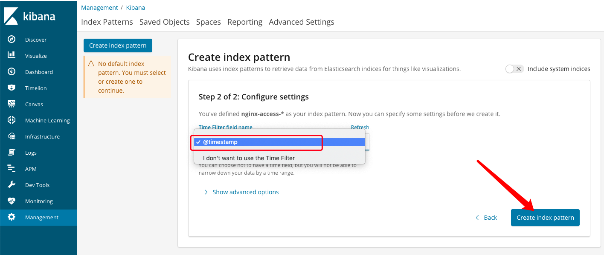
(6)、创建完成后：
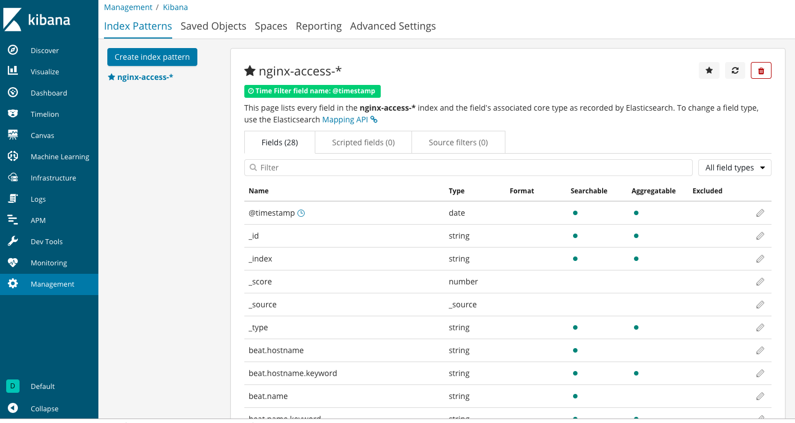
9.6.2、查看日志¶
(1)、右上角选择要查看的时间范围
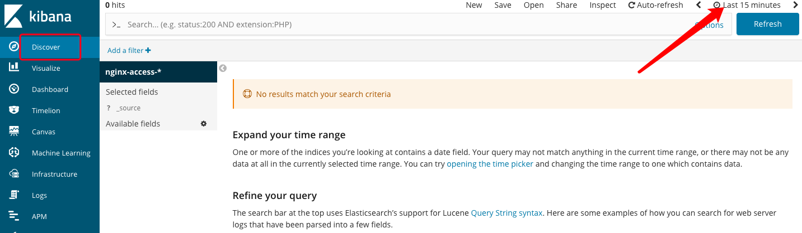
(2)、选择“Today”后，可以看到有数据显示出来了
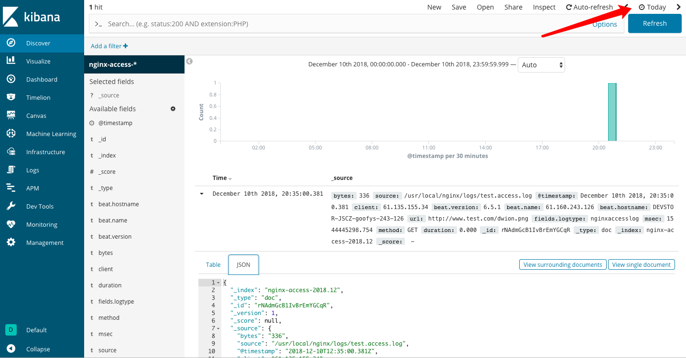
至此，本次测试过程就结束了，有关每个部分的详细配置，之后会有文档单独介绍。
s